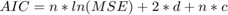
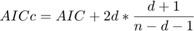

Exercise 8: Forward Selection
Submitted by Prasannjeet Singh
Contents
Q1. k-fold cross-validation implementation
The function kFoldCrossValidation() is implemented and is available in this folder
Q2. Forward Selection Algorithm
The function forwardSelection() is implemented and is available in this folder
Q3. Applying forward selection
load Data/GPUbenchmark.csv X = GPUbenchmark; y = X(:,end); % Applying forward selection below bestModels = ExTwoFunctions.forwardSelection(X); % In the cell 'bestModels' we get a list of models for which we will apply % k-fold cross validation (k=3). Note that "besetModels" is just a cell containing all the models. So at bestModels{i}, we have the indexes of all the features that are most important, if we choose "i" featurs. Since we are already aware of the model with "0" features, it doesn't return the same. k = 3; for i = 1:length(bestModels) res(i,:) = [i ExTwoFunctions.kFoldCrossValidation([X(:,bestModels{i}) X(:,end)],k)]; end % Applying k-Fold Cross Validation separately for model with "0" features: res(length(bestModels)+1,:) = [0 ExTwoFunctions.kFoldCrossValidation([ones(length(y),1) y],k)]; res = sortrows(res,2) if (res(1,1) == 0) totalFeatures = 0 featureList = 'Model with 0 Features' else totalFeatures = res(1,1) featureList = sort(bestModels{totalFeatures}) end
res =
1.0e+03 *
0.0040 0.1954
0.0050 0.2257
0.0060 0.2626
0.0030 0.2918
0.0020 0.3552
0.0010 1.1000
0 8.0668
totalFeatures =
4
featureList =
1 3 5 6
Total number (count) of relevant features is displayed by the variable totalFeatures above. Also the variable featureList lists the features that were selected. The indexes point to their respective columns, or the following features:
- Cuda Cores
- Base Clock
- Boost Clock
- Memory Speed
- Memory Config
- Memory Bandwidth
importantFeature = bestModels{1}
importantFeature =
5
The most important feature should be the one which was selected in the very first iteration. Which is the feature #5. Memory Config. This can be justified by going back to exercise 2 and looking at the scatter-plots of all the training data. As the regression model used by us is linear, we can clearly observe that the scatter plot of Memory-Config is one plot that is largely concentrated along a straight line. Moreover, it is clearly evident by observation that scatter plots 1, 2 and 3 are not distributed over a straight line. Although we cannot clearly distinguish which plot amongst 3,4 and 5 is the most important, calculation of the mean squared error tells us that feature #5 gives us the least value of cost.
Note that in case of polynomial regression we might get other answers depending on the degree chosen.
AIC: Following formula was used to calculate the Akaike's Information Criterion:

[n,~] = size(X); C = log(2*pi)+1; for i = 1:length(bestModels) xCur = X(:,bestModels{i}); % xCur d = size(xCur,2)+1; mdl = fitlm(xCur,y); mse = ExTwoFunctions.mseMultiFeature(xCur,y,mdl.Coefficients.Estimate); aicGPU(i,:) = [i, n*log(mse) + 2*d + n*C]; aiccGPU(i,:) = [i, aicGPU(i,2)+2*d*(d+1)/(n-d-1)]; end % Calculating AIC an d AICc separately for models with "0" features xZero = ones(length(y),1); mdl = fitlm(xZero,y); mse = ExTwoFunctions.mseMultiFeature(xZero,y,mdl.Coefficients.Estimate); aicGPU(length(bestModels)+1,:) = [0, n*log(mse) + 2*d + n*C]; aiccGPU(length(bestModels)+1,:) = [0, aicGPU(i,2)+2*d*(d+1)/(n-d-1)]; % To see the AIC values of each model, semicolon from the following line % can be removed aicGPU = sortrows(aicGPU,2) if (aicGPU(1,1) == 0) bestAicModel = 'Zero Features' else bestAicModel = sort(bestModels{aicGPU(1,1)}) end
aicGPU =
4.0000 108.8400
5.0000 108.9409
6.0000 110.3952
3.0000 119.6578
2.0000 125.5525
1.0000 140.3005
0 192.1751
bestAicModel =
1 3 5 6
Therefore, the best model according to AIC contains 4 features (1, 3, 5 and 6), as it has the least AIC value.
AICc: Following formula was used to calculate the AICc:

% To see the AICc values of each model, semicolon from the following line % can be removed aiccGPU = sortrows(aiccGPU,2) if (aiccGPU(1,1) == 0) bestAiccModel = 'Zero Features' else bestAiccModel = sort(bestModels{aiccGPU(1,1)}) end
aiccGPU =
4.0000 113.8400
5.0000 116.5773
6.0000 121.5952
0 121.5952
3.0000 122.7348
2.0000 127.2668
1.0000 141.1005
bestAiccModel =
1 3 5 6
Although the AICc values are different than AIC values, the best model still remains the same, as the model with 4 features has the least AICc value.
It is difficult to compare the AIC and AICc results with k-fold cross validation results, as the latter keeps changing each time the function is executed. It is expected, as we shuffle all the rows of the sample data randomly, every time we run the program.